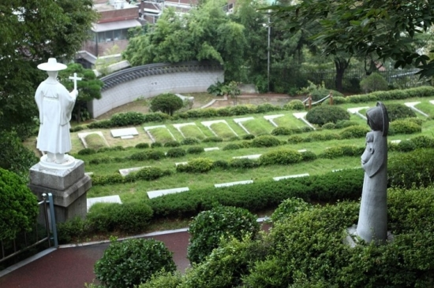

용산 성당 성직자 묘지

용산 성직자 묘지는 한 평생을 주님 앞에 혼연히 바친 성직자를 모시기 위해 교구에서 마련한 곳이다.
1887년 2월, 서울 교구에서는 신학교 건립과 묘지 조성을 위해 원효로 4가와 산천동 일대의 임야를 매입, 원효로 4가 함벽정에는 신학교를, 산천동 산비탈 삼호정 위에는 성직자 묘지를 조성하였는데, 이 자리는 피어린 순교지 새남터가 눈 아래 내려다 보이는 감회 어린 곳이기 때문이었다.
1889년 용산 신학교가 건립되면서 교구 성직자 묘지로 정해지고, 1941년 이곳에 설립된 용산 본당에서 묘지를 관리, 보존하게 되었다. 1979년에 묘역을 확장 조경하였고, 1982년에 보수를 거쳐 1987년 재 조경하여 현재와 같은 아름다운 묘역으로 단장하였다. 이 곳에는 1889년 이래, 초대 조선교구장이신 소 브뤼기에르 주교를 포함한 4위의 주교, 65위의 사제, 2위의 신한생, 1명의 치명자 등 모두 72분이 모셔져 있다.
이 성직자 묘지에서 멀지 않은 곳에 새남터를 비롯해서 당고개, 서소문,와고개,절두산 등의 성지가 있어 성지 순례를 함께 하기에 아주 좋은 곳이다.